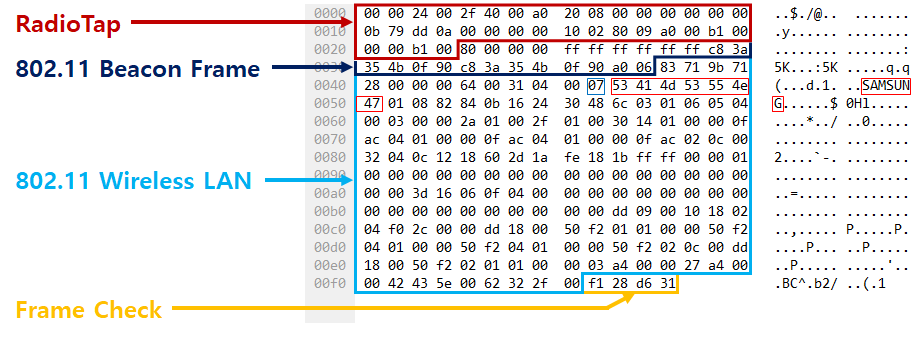

Chapter 4 WiFi Data Preprocessing
This is to understand the raw WiFi data collected and how to filter the raw data.
4.1 Reading data
Step 1: Bring your data from Pi
Download DB Browser for SQLlite.
Bring your data via FileZlia
- When you plug your sensor,
sudo systemctl stop wifi_monitorI recommend to stop the automatical setting.
- When you plug your sensor,
Open the data using the DB Browser for SQLlite
Step 2: Read the data in R
- Bring your data here
- If you don’t have the data, use this
db_raw_1a <- setDT(
dbGetQuery(dbConnect(SQLite(), dbname = "./static/file/wifi-1/wifi_2020-07-13HMS09_18_32.sqlite3"),
"SELECT timestamp, type, subtype, strength, source_address, destination_address,
access_point_name, access_point_address, sequence_number, channel, info
FROM packets") %>% collect())
head(db_raw_1a, 3)## timestamp type subtype strength
## 1: 2020-07-13T09:18:33.306726 management probe-request -81
## 2: 2020-07-13T09:18:33.319097 management probe-request -81
## 3: 2020-07-13T09:18:35.056632 management probe-request -15
## source_address destination_address access_point_name
## 1: 5c:c5:d4:0a:34:d0 ff:ff:ff:ff:ff:ff
## 2: 5c:c5:d4:0a:34:d0 ff:ff:ff:ff:ff:ff SK_WiFi908A_5G
## 3: d0:7f:a0:40:be:6b ff:ff:ff:ff:ff:ff
## access_point_address sequence_number channel
## 1: ff:ff:ff:ff:ff:ff 3370 6
## 2: ff:ff:ff:ff:ff:ff 3371 6
## 3: ff:ff:ff:ff:ff:ff 2598 1
## info
## 1: 000012002e48000000028509a000af01000040100000ffffffffffff5cc5d40a34d0ffffffffffffa0d20000010802040b160c1218242d1a6e0917ffff00000000000000000000000000000000000000000032043048606c7f080200008001400000bf0c22718003faff0000faff0000
## 2: 000012002e48000000028509a000af01000040100000ffffffffffff5cc5d40a34d0ffffffffffffb0d2000e534b5f57694669393038415f3547010802040b160c1218242d1a6e0917ffff00000000000000000000000000000000000000000032043048606c7f080200008001400000bf0c22718003faff0000faff0000
## 3: 000012002e48000000026c09a000f101000040000000ffffffffffffd07fa040be6bffffffffffff60a20000010402040b1632080c1218243048606c0301012d1a21001fff000000000000000000800100000000000000000000007f050000008001dd09001018020010000000Data Description
| Field name | Description |
|---|---|
| timestamp | The time at which the packet detected at sensor |
| Type/subtype | Type of packet |
| Strength | The strength of the received signal at sensor |
| Source address | The MAC address of the device that creates the original message |
| Destination address | The MAC address of the device that eventually receives the message |
| Access point address | The MAC address of the device that involves delivering |
| Sequence number | - |
| Channel | Adapter set be to monitor |
| Info | raw |
- The info column, is segmented to each field by hex (raw) via
binascii.hexlify. Here 
4.2 Preprocessing data
Step 1: Removal of random MAC addresses
You can assess the random MAC address here
- How much Random MAC addresses are included?
RANDOMIZED_SECOND_ORDER <- c("2", "6", "a", "e")Step 2: Removal of non-mobile devices
- Join the MAC Vendor for first 12-chracter of MAC address
- Extract
Samsung|Apple|Xiaomi|LG|Huawei|Microsoft|Sony|OnePlus|Google
MAC_VENDOR <- fread("https://macaddress.io/database/macaddress.io-db.csv") %>%
select(oui, companyName) %>% mutate(MAC_FIRST6 = str_sub(tolower(oui), 1, 8)) %>%
select(-oui) %>%
as.data.table()